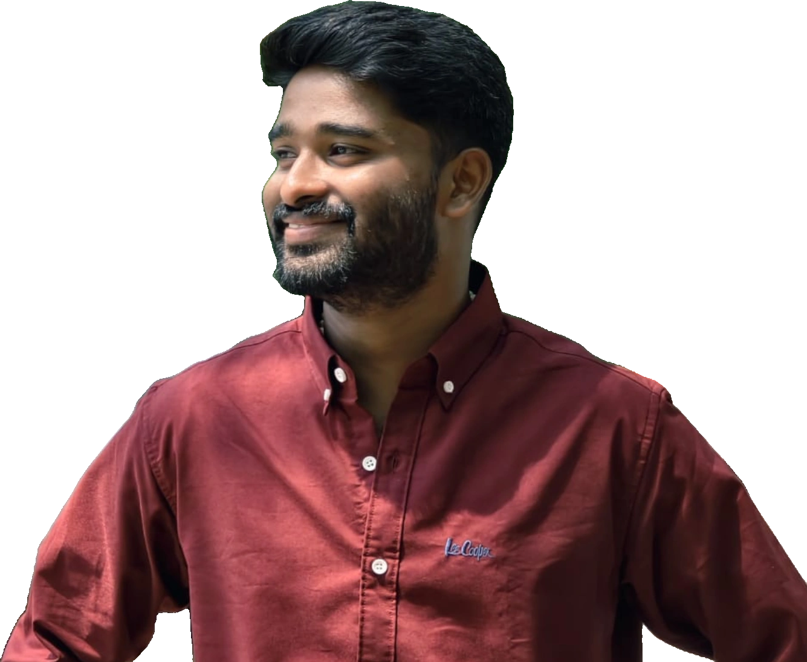

Psychology Researcher · Software Engineer
Engineering Digital Tools for Psychological Science, Research, and Education. I build automated software to streamline quantitative research workflows and elevate psychological learning.

what you see here says as much about you as it does about the ink
About
As a researcher and software builder, I focus on the intersection of human behavior and technology. I noticed that much of the academic process is bogged down by redundant manual data entry, prone to human scoring errors, or constrained by static learning tools. I build software to fix that.
Whether automating psychometric data scaling for quantitative psychological studies or designing structured course platforms for student retrieval, my goal is to make psychological methodology faster, more accurate, and accessible.
My active research explores the cognitive implications of artificial intelligence integration in academic environments, alongside studies in developmental, clinical, and social psychology.
Work
Interactive web applications designed to solve real operational bottlenecks in research and academic studies.
An automated psychometric data tool built for academic researchers to streamline scale scoring, eliminate manual entry errors, and accelerate quantitative data processing in research workflows.
A centralized digital workspace designed for psychology students to streamline complex course materials, track core theories, and accelerate exam preparation in one intuitive hub.
Papers & Presentations
Peer-reviewed presentations and manuscripts exploring cognition, self-regulation, and family dynamics.
Certificates
Verified training in clinical, therapeutic, and counseling modalities.
| Credential | Issuer | ID / Status | Year |
|---|---|---|---|
| Advanced Diploma in Cognitive Behavioural Therapy | Alison | ID: 4253-58782357 | 2026 |
| Developing Clinical Empathy: Making a Difference in Patient Care | FutureLearn | Verified | 2026 |
| Certification in Couple Therapy and Counseling - Accredited | Udemy | Accredited | 2026 |
| The Complete Child-Centered EMDR - Accredited Course | Udemy | Accredited | 2026 |
| Managing Mental Health and Stress | FutureLearn | Verified | 2025 |
| Professional Certification in Counseling - Fully Accredited | Udemy | ID: UC-ca0910eb-9820-4a1e-8b52-58ec5b5db9ac | 2021 |
Field log
Key milestones in psychological research, application development, and conference presentations.
Presented preliminary findings on Academic AI Usage and Cognitive Flexibility across multiple national and international conferences. Released Research Helper to streamline automated scale scoring.
Presented research on high school self-regulation patterns at ICPPW. Built and launched Psych Catalog to aggregate psychological course theories for undergraduates.
Completed professional accredited certification in counseling, initiating ongoing coursework across CBT, EMDR, and clinical empathy.